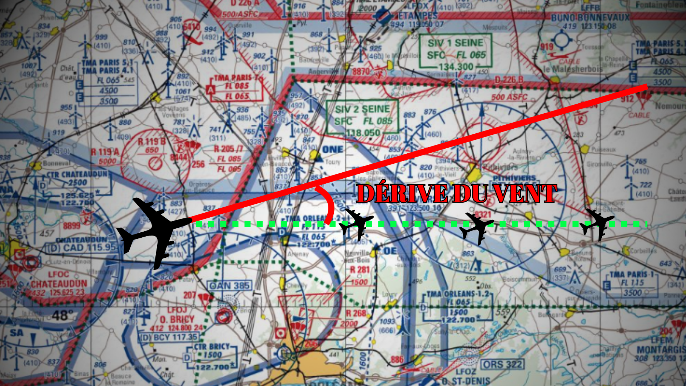

Préparation de vol
Les sites essentiels à la préparation du vol VFR tels que Sofia Briefing, Aeroweb, Wingly...
Voir plus

Calculer la dérive du vent
Cet outil vous permet de calculer la dérive que vous devez prendre en fonction de votre route, de la direction et de la force du vent.
Voir plus
Calcul du temps de vol
Cet outil vous permet de calculer le temps de vol en fonction de la vitesse de votre avion ainsi que de la force et la direction du vent
Voir plus
Devis carburant
Cet outil permet de calculer la quantité minimum de carburant a emporter poour un vol.
Voir plus